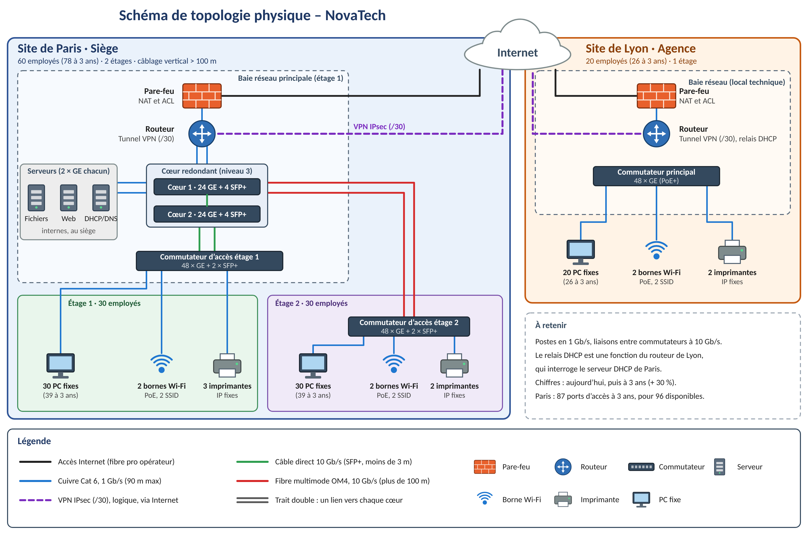

NovaTech — Architecture réseau

Topologie physique : siège de Paris (2 étages) et agence de Lyon, reliés par un VPN IPsec.
Description
À partir d'un appel d'offre fictif, j'ai conçu l'architecture réseau de NovaTech : un siège à Paris réparti sur deux étages et une agence à Lyon. Le travail va de l'analyse du besoin jusqu'au choix des équipements et des câbles, avec le nombre de ports justifié pour chaque switch.
Les capacités ont été calculées avec une marge de croissance de 30 % : 80 utilisateurs deviennent 104 (78 à Paris, 26 à Lyon).
Ce que j'ai fait
- Besoin et hypothèses : analyse du cahier des charges, contraintes, hypothèses de dimensionnement.
- Topologie physique : deux cœurs de réseau de niveau 3 redondants à Paris, switches d'accès 48 ports Gigabit + 2 ports SFP+, câbles DAC 10G dans la baie.
- Supports : Cat 6 pour les liaisons de moins de 90 m, fibre OM4 vers l'étage 2 au-delà des 100 m.
- Liaison inter-sites : VPN IPsec via Internet, tunnel en /30.
- Segmentation : plan de VLAN et d'adressage par site, DHCP relay (cœurs à Paris, routeur à Lyon).
- Sécurité : ACL en refus par défaut, réseau invité isolé, préparation au double pile IPv4/IPv6.
- Documentation : schéma physique légendé et dossier relu pour supprimer les incohérences (ports, VLAN, effectifs).
Un problème rencontré
Le câble Cat 6 est limité à 100 m, et l'étage 2 dépasse cette distance depuis la baie principale. J'ai gardé 90 m comme limite de conception et choisi une liaison fibre OM4, avec un port SFP+ plutôt qu'un port Gigabit sur le switch concerné.